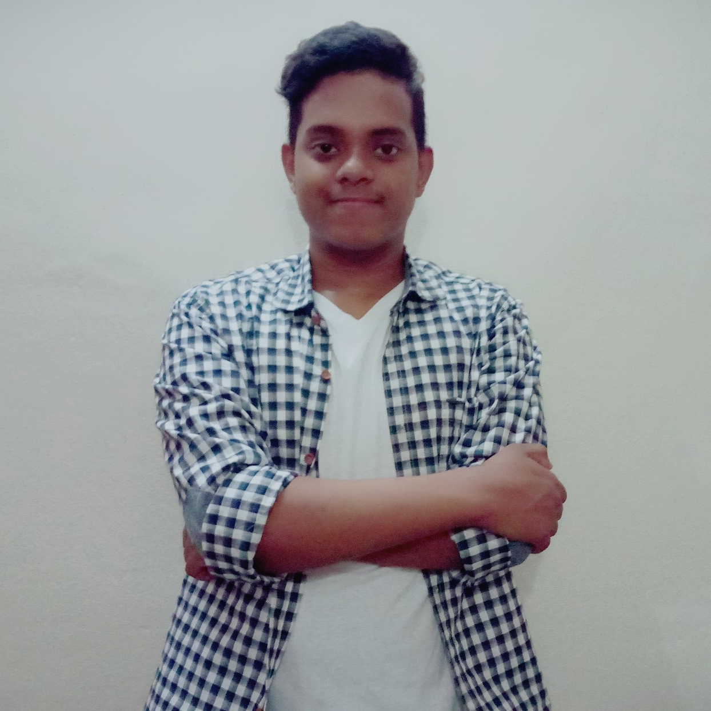

Curriculum vitae
Maruf Hossain
Contact : 01849323351
Email : maruf.mh.freelancer@gmail.com
Objective
Seeking the job of a Graphic Arts Designer at Daffodil Polytechnic Institute. To utilize two years experience in commercial art work and the ability to be effective in an intense political environment managing competing deadlines and priorities, in developing the strategic designs to assist the execution of the firm’s programs.
Education
SECONDARY SCHOOL CERTIFICATE, 2018 , SIDDHESWARI BOY'S HIGHER SECONDARY SCHOOL AND COLLEGE
Experience
GRAPHICS DESIGNER | CREATIVE ARTOLOGY | 2017 – 2018
Skills & Abilities
ADOBE ILLUSTRATOR – 90%
ADOBE PHOTOSHOP- 70%
ADOVE XD – 100%
Communication Skills
BANGLA – 100%
HINDI- 70%
ENGLISH – 60%
LEADERSHIP
Founder of Creative Artology